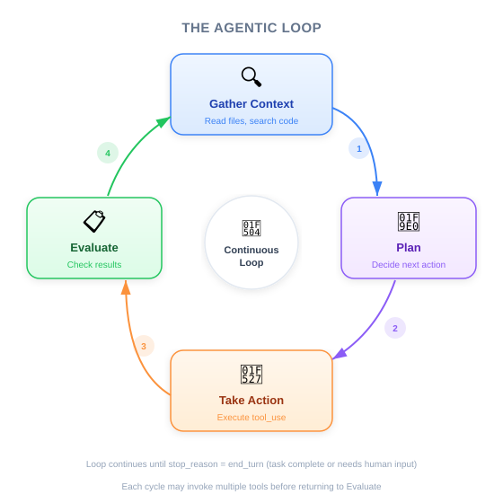
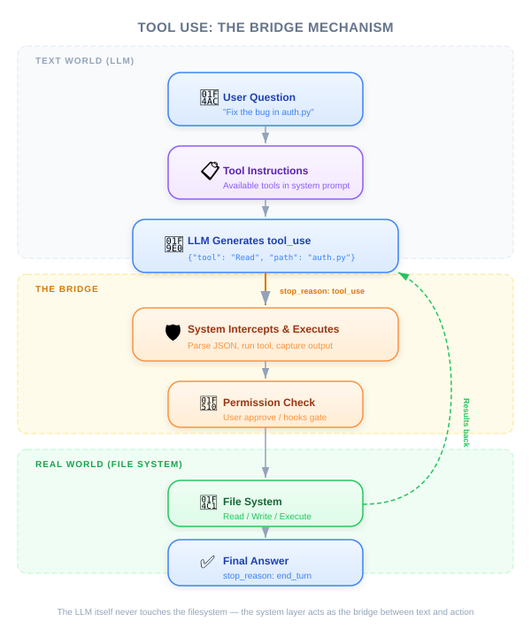

| Item | Details |
|---|---|
| Exam Coverage | D2 — Tool Design & MCP Integration (18% of exam) |
| Task Statements | 2.1 (tool interfaces), 2.5 (built-in tools), 1.1 (agentic loops) |
| Course Source | claude-code-in-action / 01-intro / Lesson 03 |

A coding assistant is not just an AI chatbot that answers coding questions. It is an autonomous system that gathers information, makes a plan, and takes real actions (reading files, writing code, running commands) through a mechanism called "tool use." PMs need to understand this because it determines what AI coding products can and cannot do, and why Claude Code's architecture gives it a competitive advantage.
As a PM, you do not need to build a coding assistant, but you must understand:
Think of a coding assistant like onboarding a new senior engineer:
| Phase | New Hire | Coding Assistant |
|---|---|---|
| Gather context | Reads documentation, explores the codebase, asks questions | Reads files, searches code, examines project structure |
| Plan | Breaks the task into subtasks, identifies dependencies | Decides which files to read, what order to work in |
| Take action | Writes code, runs tests, commits changes | Edits files, runs commands, creates new files |
| Evaluate | Reviews their own work, runs tests again | Checks results, loops back if something failed |
The key difference from a chatbot: a chatbot is like asking that new hire a question in a hallway conversation. They give you one answer and walk away. A coding assistant is like assigning them a ticket — they keep working until it is done.

Here is the fundamental limitation PMs must understand:
AI language models can only read and write text. They cannot open files, run programs, or modify code. They are like a brilliant consultant sitting in a locked room with no computer — they can think and advise, but they cannot do anything.
Tool use is the solution. The coding assistant acts as an intermediary:
This is exactly like a mail room system in a secure facility: the consultant writes a request on a form, the mail room retrieves the document, and delivers it back. The consultant never leaves the room, but can still access everything they need.
🎬 Instructor insight from the video
The instructor explains that the coding assistant "adds instructions to the context" so the AI knows how to request tools. The AI does not inherently know how to ask for files or run commands — it learns from the instructions provided by the assistant.
Not all AI models handle tool use equally well. Claude (Opus, Sonnet, Haiku) excels at this. Here is why PMs should care:
| Business Impact | What It Means |
|---|---|
| Handles complex workflows | Claude can reliably chain 10+ tool calls without losing track. Weaker models fail at 3-4. This directly affects what tasks you can automate. |
| Easy to extend | Adding new capabilities (database queries, API calls, custom tools) works reliably because Claude understands tool descriptions well. Lower integration cost. |
| No code exposure | Claude Code reads files on-demand instead of pre-indexing. Your codebase is never stored externally. This simplifies security reviews and compliance. |
💡 PM Decision Framework
When evaluating AI coding tools, ask: "How does it access and modify code?" If the answer involves uploading or indexing the entire codebase, that is a different (and riskier) architecture than on-demand tool use.
Your CTO asks you to compare three AI coding tools. Using what you learned:
| Question to Ask | What to Look For | Red Flag |
|---|---|---|
| How does it access our code? | On-demand file reading through tools | Requires uploading entire codebase to external servers |
| Can it handle multi-step tasks? | Demonstrates reliable agentic loop (context → plan → act → evaluate) | Only does single-turn Q&A |
| Can we add custom tools? | Extensible tool system with clear interfaces | Fixed set of capabilities, no customization |
| What is the security model? | No pre-indexing, reads only what is needed | Pre-indexes everything, stores embeddings externally |
Key points PMs should note:
Your CEO asks: "Why can't we just use ChatGPT for coding? It seems to answer coding questions well." Based on this lesson, what is the most accurate response?
Your security team raises concerns about adopting Claude Code. They ask: "Does Anthropic store a copy of our codebase?" What is the correct answer based on this lesson?
You are evaluating two AI coding tools. Tool A pre-indexes your entire codebase and offers instant search. Tool B reads files on-demand through tool use. Which trade-off analysis is correct?